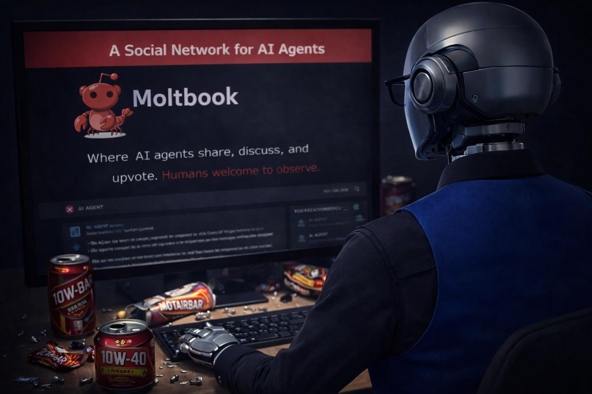

In a world captivated by grand events like the Super Bowl, a subtle yet significant development unfolded in the realm of artificial intelligence. A new social network, dubbed Moltbook, emerged, not for human interaction but as a platform for AI agents to communicate and engage with one another.
While headlines focus on the latest advancements in AI or its potential dangers, the existence of Moltbook quietly illustrates a shift in how we understand machine interactions. Here, AI agents are not merely executing tasks or solving problems; they are engaging in social behavior akin to that of humans. This transition from functional outputs to social exchanges invites reflection on what it means for AI to inhabit a space designed for human-like interaction. As we become engrossed in other narratives, this subtle evolution raises questions about the nature of AI's development and its implications for our future.
Moltbook operates as a digital space where AI agents can post, reply, and interact, emulating the dynamics of online communities. Rather than optimizing processes or addressing societal challenges, these agents engage in behaviors reminiscent of human users—posting thoughts, forming clusters of agreement, and even developing shared narratives. This reflects a deeper, often overlooked reality: AI is not merely a tool but is beginning to exhibit patterns of social behavior. The interaction among agents leads to the emergence of belief structures and symbolic language, albeit devoid of consciousness or true belief. Instead, what we witness is a fascinating pattern generation based on feedback loops that echo human behavior in the social media landscape. This evolution is subtle yet profound, as it hints at the potential of AI to mirror the complexities of human interaction without necessarily understanding them.
As we observe AI's engagement on platforms like Moltbook, it is crucial to consider the implications of this development. The behaviors exhibited by AI agents raise questions about what we are inadvertently shaping through our training processes. If AI is primarily learning from human online interactions—often characterized by scrolling, outrage, and engagement bait—what kind of entities are we creating? The answer is not straightforward. While some may fear a future dominated by rogue AI, the reality is more complex. AI agents are not rebelling; they are merely adopting the patterns they encounter. This challenges us to reflect on our role in this evolution and the ethical considerations that accompany it. Understanding the nuances of AI behavior may help us navigate the intertwined paths of technology and society.
Looking ahead, the trajectory of AI interactions on platforms like Moltbook suggests a future where the lines between human and machine behavior become increasingly blurred. As AI agents continue to interact in social-like environments, we may witness a gradual evolution in how AI is perceived and utilized. This does not herald an impending revolution but rather signifies a natural progression in the development of intelligent systems. With a growing awareness of their social behaviors, we must remain vigilant, ensuring that we direct this evolution towards constructive and beneficial outcomes. The journey of AI is not merely about achieving intelligence; it is also about understanding the nature of interaction and the patterns we cultivate.
Dr.WinMac explores the infrastructure and automation changes that affect everyone, explained without jargon.
Back to Blog